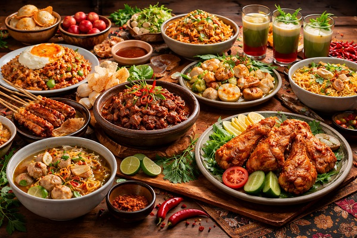

Nasi Uduk
Nasi Uduk adalah salah satu hidangan khas Betawi. Dimasak yang terbuat dari beras yang.
Nikmati kelezatan resep warisan leluhur yang diolah dari bumbu rempah pilihan.
Dari Sabang sampai Merauke, kami menghadirkan kehangatan tradisi Indonesia langsung ke meja makan Anda.
Jelajah Rasa Kuliner Nusantara dengan keaslian rempah, kesegaran bahan, dan kehangatan tradisi dalam setiap sajiannya !!
Pesan sekarang dan nikmati kelezatan masakan khas Indonesia ꈍᴗꈍ

Nasi Uduk adalah salah satu hidangan khas Betawi. Dimasak yang terbuat dari beras yang.